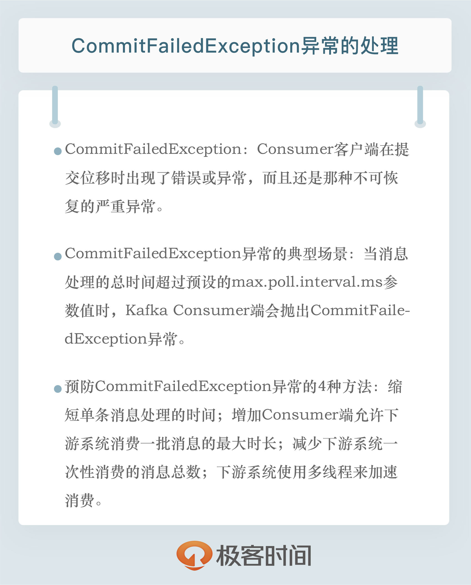

- 00 开篇词 为什么要学习Kafka？.md.html
- 01 消息引擎系统ABC.md.html
- 02 一篇文章带你快速搞定Kafka术语.md.html
- 03 Kafka只是消息引擎系统吗？.md.html
- 04 我应该选择哪种Kafka？.md.html
- 05 聊聊Kafka的版本号.md.html
- 06 Kafka线上集群部署方案怎么做？.md.html
- 07 最最最重要的集群参数配置（上）.md.html
- 08 最最最重要的集群参数配置（下）.md.html
- 09 生产者消息分区机制原理剖析.md.html
- 10 生产者压缩算法面面观.md.html
- 11 无消息丢失配置怎么实现？.md.html
- 12 客户端都有哪些不常见但是很高级的功能？.md.html
- 13 Java生产者是如何管理TCP连接的？.md.html
- 14 幂等生产者和事务生产者是一回事吗？.md.html
- 15 消费者组到底是什么？.md.html
- 16 揭开神秘的“位移主题”面纱.md.html
- 17 消费者组重平衡能避免吗？.md.html
- 18 Kafka中位移提交那些事儿.md.html
- 19 CommitFailedException异常怎么处理？.md.html
- 20 多线程开发消费者实例.md.html
- 21 Java 消费者是如何管理TCP连接的_.md.html
- 22 消费者组消费进度监控都怎么实现？.md.html
- 23 Kafka副本机制详解.md.html
- 24 请求是怎么被处理的？.md.html
- 25 消费者组重平衡全流程解析.md.html
- 26 你一定不能错过的Kafka控制器.md.html
- 27 关于高水位和Leader Epoch的讨论.md.html
- 28 主题管理知多少_.md.html
- 29 Kafka动态配置了解下？.md.html
- 30 怎么重设消费者组位移？.md.html
- 31 常见工具脚本大汇总.md.html
- 32 KafkaAdminClient：Kafka的运维利器.md.html
- 33 Kafka认证机制用哪家？.md.html
- 34 云环境下的授权该怎么做？.md.html
- 35 跨集群备份解决方案MirrorMaker.md.html
- 36 你应该怎么监控Kafka？.md.html
- 37 主流的Kafka监控框架.md.html
- 38 调优Kafka，你做到了吗？.md.html
- 39 从0搭建基于Kafka的企业级实时日志流处理平台.md.html
- 40 Kafka Streams与其他流处理平台的差异在哪里？.md.html
- 41 Kafka Streams DSL开发实例.md.html
- 42 Kafka Streams在金融领域的应用.md.html
- 加餐 搭建开发环境、阅读源码方法、经典学习资料大揭秘.md.html
- 用户故事 黄云：行百里者半九十.md.html
- 结束语 以梦为马，莫负韶华！.md.html
- 捐赠
19 CommitFailedException异常怎么处理？
你好，我是胡夕。今天我来跟你聊聊CommitFailedException异常的处理。
说起这个异常，我相信用过Kafka Java Consumer客户端API的你一定不会感到陌生。所谓CommitFailedException，顾名思义就是Consumer客户端在提交位移时出现了错误或异常，而且还是那种不可恢复的严重异常。如果异常是可恢复的瞬时错误，提交位移的API自己就能规避它们了，因为很多提交位移的API方法是支持自动错误重试的，比如我们在上一期中提到的commitSync方法。
每次和CommitFailedException一起出现的，还有一段非常著名的注释。为什么说它很“著名”呢？第一，我想不出在近50万行的Kafka源代码中，还有哪个异常类能有这种待遇，可以享有这么大段的注释，来阐述其异常的含义；第二，纵然有这么长的文字解释，却依然有很多人对该异常想表达的含义感到困惑。
现在，我们一起领略下这段文字的风采，看看社区对这个异常的最新解释：
Commit cannot be completed since the group has already rebalanced and assigned the partitions to another member. This means that the time between subsequent calls to poll() was longer than the configured max.poll.interval.ms, which typically implies that the poll loop is spending too much time message processing. You can address this either by increasing max.poll.interval.ms or by reducing the maximum size of batches returned in poll() with max.poll.records.
这段话前半部分的意思是，本次提交位移失败了，原因是消费者组已经开启了Rebalance过程，并且将要提交位移的分区分配给了另一个消费者实例。出现这个情况的原因是，你的消费者实例连续两次调用poll方法的时间间隔超过了期望的max.poll.interval.ms参数值。这通常表明，你的消费者实例花费了太长的时间进行消息处理，耽误了调用poll方法。
在后半部分，社区给出了两个相应的解决办法（即橙色字部分）：
- 增加期望的时间间隔max.poll.interval.ms参数值。
- 减少poll方法一次性返回的消息数量，即减少max.poll.records参数值。
在详细讨论这段文字之前，我还想提一句，实际上这段文字总共有3个版本，除了上面的这个最新版本，还有2个版本，它们分别是：
Commit cannot be completed since the group has already rebalanced and assigned the partitions to another member. This means that the time between subsequent calls to poll() was longer than the configured session.timeout.ms, which typically implies that the poll loop is spending too much time message processing. You can address this either by increasing the session timeout or by reducing the maximum size of batches returned in poll() with max.poll.records.
Commit cannot be completed since the group has already rebalanced and assigned the partitions to another member. This means that the time between subsequent calls to poll() was longer than the configured max.poll.interval.ms, which typically implies that the poll loop is spending too much time message processing. You can address this either by increasing the session timeout or by reducing the maximum size of batches returned in poll() with max.poll.records.
这两个较早的版本和最新版相差不大，我就不详细解释了，具体的差异我用橙色标注了。我之所以列出这些版本，就是想让你在日后看到它们时能做到心中有数，知道它们说的是一个事情。
其实不论是哪段文字，它们都表征位移提交出现了异常。下面我们就来讨论下该异常是什么时候被抛出的。从源代码方面来说，CommitFailedException异常通常发生在手动提交位移时，即用户显式调用KafkaConsumer.commitSync()方法时。从使用场景来说，有两种典型的场景可能遭遇该异常。
场景一
我们先说说最常见的场景。当消息处理的总时间超过预设的max.poll.interval.ms参数值时，Kafka Consumer端会抛出CommitFailedException异常。这是该异常最“正宗”的登场方式。你只需要写一个Consumer程序，使用KafkaConsumer.subscribe方法随意订阅一个主题，之后设置Consumer端参数max.poll.interval.ms=5秒，最后在循环调用KafkaConsumer.poll方法之间，插入Thread.sleep(6000)和手动提交位移，就可以成功复现这个异常了。在这里，我展示一下主要的代码逻辑。
…
Properties props = new Properties();
…
props.put("max.poll.interval.ms", 5000);
consumer.subscribe(Arrays.asList("test-topic"));
while (true) {
ConsumerRecords<String, String> records =
consumer.poll(Duration.ofSeconds(1));
// 使用Thread.sleep模拟真实的消息处理逻辑
Thread.sleep(6000L);
consumer.commitSync();
}
如果要防止这种场景下抛出异常，你需要简化你的消息处理逻辑。具体来说有4种方法。
缩短单条消息处理的时间。比如，之前下游系统消费一条消息的时间是100毫秒，优化之后成功地下降到50毫秒，那么此时Consumer端的TPS就提升了一倍。
增加Consumer端允许下游系统消费一批消息的最大时长。这取决于Consumer端参数max.poll.interval.ms的值。在最新版的Kafka中，该参数的默认值是5分钟。如果你的消费逻辑不能简化，那么提高该参数值是一个不错的办法。值得一提的是，Kafka 0.10.1.0之前的版本是没有这个参数的，因此如果你依然在使用0.10.1.0之前的客户端API，那么你需要增加session.timeout.ms参数的值。不幸的是，session.timeout.ms参数还有其他的含义，因此增加该参数的值可能会有其他方面的“不良影响”，这也是社区在0.10.1.0版本引入max.poll.interval.ms参数，将这部分含义从session.timeout.ms中剥离出来的原因之一。
减少下游系统一次性消费的消息总数。这取决于Consumer端参数max.poll.records的值。当前该参数的默认值是500条，表明调用一次KafkaConsumer.poll方法，最多返回500条消息。可以说，该参数规定了单次poll方法能够返回的消息总数的上限。如果前两种方法对你都不适用的话，降低此参数值是避免CommitFailedException异常最简单的手段。
下游系统使用多线程来加速消费。这应该算是“最高级”同时也是最难实现的解决办法了。具体的思路就是，让下游系统手动创建多个消费线程处理poll方法返回的一批消息。之前你使用Kafka Consumer消费数据更多是单线程的，所以当消费速度无法匹及Kafka Consumer消息返回的速度时，它就会抛出CommitFailedException异常。如果是多线程，你就可以灵活地控制线程数量，随时调整消费承载能力，再配以目前多核的硬件条件，该方法可谓是防止CommitFailedException最高档的解决之道。事实上，很多主流的大数据流处理框架使用的都是这个方法，比如Apache Flink在集成Kafka时，就是创建了多个KafkaConsumerThread线程，自行处理多线程间的数据消费。不过，凡事有利就有弊，这个方法实现起来并不容易，特别是在多个线程间如何处理位移提交这个问题上，更是极容易出错。在专栏后面的内容中，我将着重和你讨论一下多线程消费的实现方案。
综合以上这4个处理方法，我个人推荐你首先尝试采用方法1来预防此异常的发生。优化下游系统的消费逻辑是百利而无一害的法子，不像方法2、3那样涉及到Kafka Consumer端TPS与消费延时（Latency）的权衡。如果方法1实现起来有难度，那么你可以按照下面的法则来实践方法2、3。
首先，你需要弄清楚你的下游系统消费每条消息的平均延时是多少。比如你的消费逻辑是从Kafka获取到消息后写入到下游的MongoDB中，假设访问MongoDB的平均延时不超过2秒，那么你可以认为消息处理需要花费2秒的时间。如果按照max.poll.records等于500来计算，一批消息的总消费时长大约是1000秒，因此你的Consumer端的max.poll.interval.ms参数值就不能低于1000秒。如果你使用默认配置，那默认值5分钟显然是不够的，你将有很大概率遭遇CommitFailedException异常。将max.poll.interval.ms增加到1000秒以上的做法就属于上面的第2种方法。
除了调整max.poll.interval.ms之外，你还可以选择调整max.poll.records值，减少每次poll方法返回的消息数。还拿刚才的例子来说，你可以设置max.poll.records值为150，甚至更少，这样每批消息的总消费时长不会超过300秒（150*2=300），即max.poll.interval.ms的默认值5分钟。这种减少max.poll.records值的做法就属于上面提到的方法3。
场景二
Okay，现在我们已经说完了关于CommitFailedException异常的经典发生场景以及应对办法。从理论上讲，关于该异常你了解到这个程度，已经足以帮助你应对应用开发过程中由该异常带来的“坑”了 。但其实，该异常还有一个不太为人所知的出现场景。了解这个冷门场景，可以帮助你拓宽Kafka Consumer的知识面，也能提前预防一些古怪的问题。下面我们就来说说这个场景。
之前我们花了很多时间学习Kafka的消费者，不过大都集中在消费者组上，即所谓的Consumer Group。其实，Kafka Java Consumer端还提供了一个名为Standalone Consumer的独立消费者。它没有消费者组的概念，每个消费者实例都是独立工作的，彼此之间毫无联系。不过，你需要注意的是，独立消费者的位移提交机制和消费者组是一样的，因此独立消费者的位移提交也必须遵守之前说的那些规定，比如独立消费者也要指定group.id参数才能提交位移。你可能会觉得奇怪，既然是独立消费者，为什么还要指定group.id呢？没办法，谁让社区就是这么设计的呢？总之，消费者组和独立消费者在使用之前都要指定group.id。
现在问题来了，如果你的应用中同时出现了设置相同group.id值的消费者组程序和独立消费者程序，那么当独立消费者程序手动提交位移时，Kafka就会立即抛出CommitFailedException异常，因为Kafka无法识别这个具有相同group.id的消费者实例，于是就向它返回一个错误，表明它不是消费者组内合法的成员。
虽然说这个场景很冷门，但也并非完全不会遇到。在一个大型公司中，特别是那些将Kafka作为全公司级消息引擎系统的公司中，每个部门或团队都可能有自己的消费者应用，谁能保证各自的Consumer程序配置的group.id没有重复呢？一旦出现不凑巧的重复，发生了上面提到的这种场景，你使用之前提到的哪种方法都不能规避该异常。令人沮丧的是，无论是刚才哪个版本的异常说明，都完全没有提及这个场景，因此，如果是这个原因引发的CommitFailedException异常，前面的4种方法全部都是无效的。
更为尴尬的是，无论是社区官网，还是网上的文章，都没有提到过这种使用场景。我个人认为，这应该算是Kafka的一个bug。比起返回CommitFailedException异常只是表明提交位移失败，更好的做法应该是，在Consumer端应用程序的某个地方，能够以日志或其他方式友善地提示你错误的原因，这样你才能正确处理甚至是预防该异常。
小结
总结一下，今天我们详细讨论了Kafka Consumer端经常碰到的CommitFailedException异常。我们从它的含义说起，再到它出现的时机和场景，以及每种场景下的应对之道。当然，我也留了个悬念，在专栏后面的内容中，我会详细说说多线程消费的实现方式。希望通过今天的分享，你能清晰地掌握CommitFailedException异常发生的方方面面，从而能在今后更有效地应对此异常。

开放讨论
请比较一下今天我们提到的预防该异常的4种方法，并说说你对它们的理解。
欢迎写下你的思考和答案，我们一起讨论。如果你觉得有所收获，也欢迎把文章分享给你的朋友。
© 2019 - 2023 Liangliang Lee. Powered by gin and hexo-theme-book.